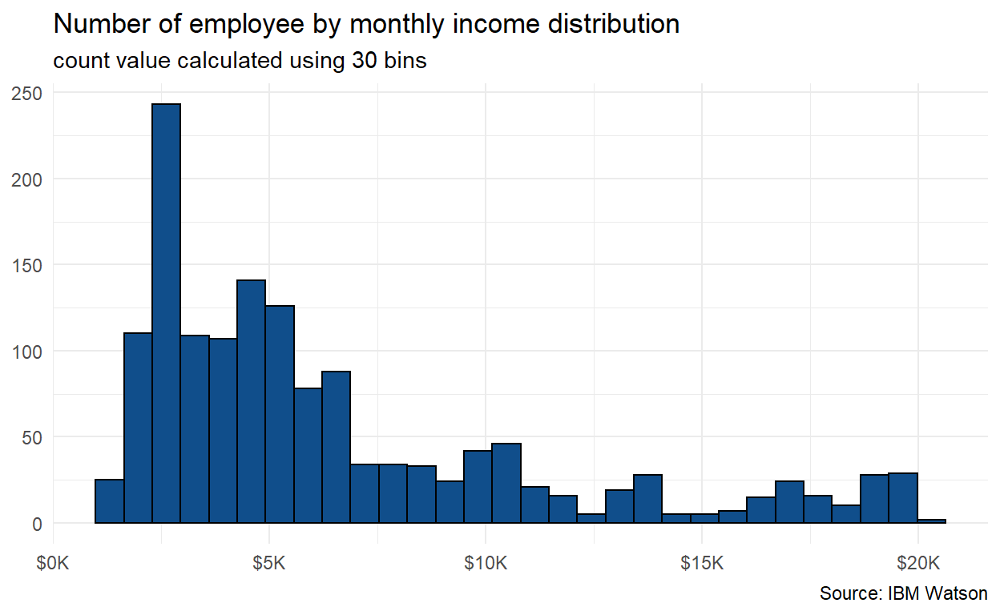
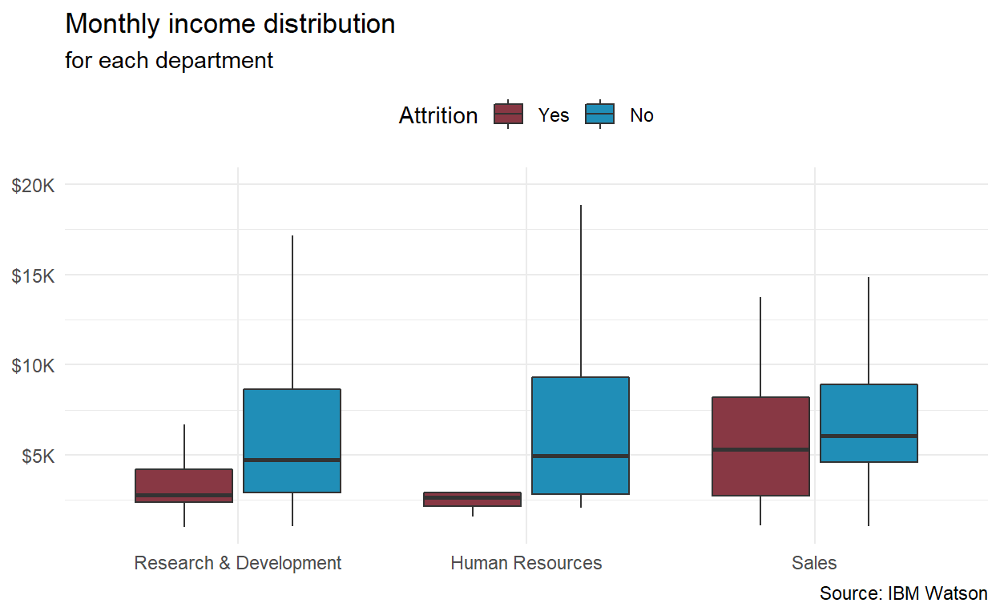
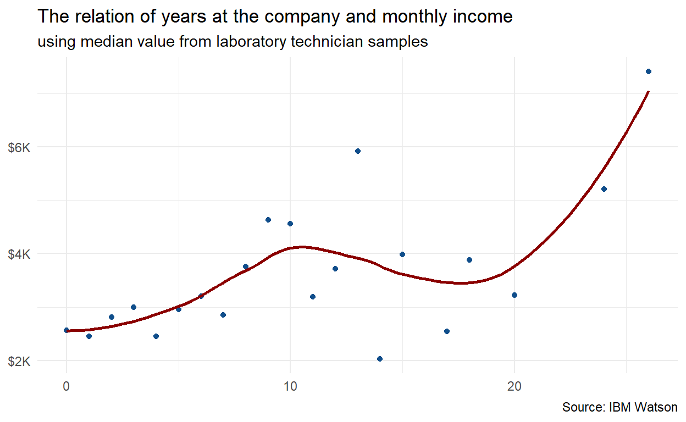
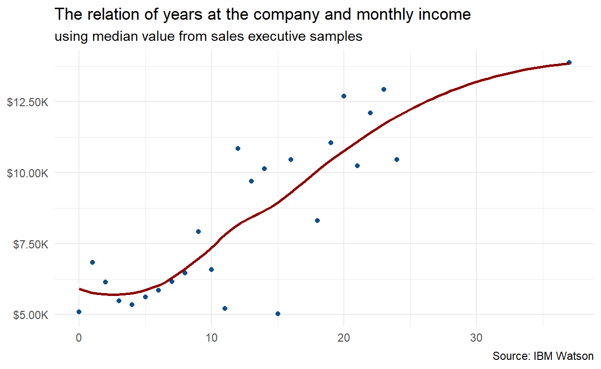

Chap.1: Basic Knowlegde
Data Science Workflow
Data science is a multi-disciplinary field that uses scientific methods, processes, algorithms and systems to extract knowledge and insights from structured and unstructured data (Dhar, 2013 ). There is a certain workflow that applied in a data science project. Below is a good chart that explains the workflow of a data science project from a book by Grolemund & Wickham, titled R for Data Science.
The Grammer of Graphics
The ggplot2 package is created by Hadley Wickham in 2005 as an implementation of Lelad Wilkinson’s Grammar of Graphics. The idea with Grammar of Graphics is to create a formal model for data visualization, by breaking down graphics into components that could be systematically added or subtracted by the end user.
With ggplot2, plots may be created using qplot() where arguments and defaults are handled similarly to the base plotting system, or through ggplot() where user can add or alter plot components layer-by-layer with a high level of modularity.
The latter is more important approach, because it allows the data scientists to work with plots in a system that breaks up these different tasks. Instead of a huge, conceptually flat list of parameters to control every aspect of the plot’s final outcome, this system makes plotting a series of distinct task, each focused on one aspect of the plot’s final output.
Chap.2: Data Visualization in Context
Visualization is a powerful way to deliver a context from our data. If we could choose a good way to communicate our context, our audience will get the insight that we want to deliver.
- Categorical ranking
- bar plot (
geom_bar/geom_col) - lollipop plot (
geom_segment)
- bar plot (
- Data distribution
- Histogram plot (
geom_hist) - Density plot (
geom_density)
- Histogram plot (
- Correlation between data
- Scatter plot (
geom_point)
- Scatter plot (
- Map and geospatial
- leaflet
Good reference to leads you to the most appropriate graph for your data data-to-viz We will cover the basic way to visualize using the attrition dataset.
data_attrition <- read.csv("data_input/data-attrition.csv")
head(data_attrition)Chap.2.1: Categorical Ranking
Categorical ranking is one of the most basic ways to communicate how our categorical variable could show a different behaviour between its levels in terms of a numerical output.
The aggregation steps has been done to save your time to visualize the context and named data_viz.
Exercise-1
For a starter, let’s try to see the ranking of education_field in terms of number of employee. Use data_viz object and geom_col()!
Congratulation on your first plot. Can you imagine how to replicate the following plot?

Exercise-2
Drag and drop for the appropriate way to replicate the plot above:
Exercise-3
From exercise above try to create your solution here:
Chap.2.2: Data Distribution
Data distribution is a, slightly statistical, way to see how our numerical data distributed inside our sample dataset. One thing that should be noted for this visualization: it only works for continuous numerical variable.
let’s see how monthly income is distributed between the employees if we use 30 bins:

Exercise-5
Using data_attrition, could you replicate the plot above?
Let’s try another plot by splitting the monthly income distribution by department and attrition:

Exercise-6
Using data_viz, could you replicate the plot above?
# your code here:Exercise-4
From exercise above try to answer this question:
Chap.2.3: Correlation between Data
- Between continuous variables
The most common form of correlation is between continuous numerical variables. It could show us if the two variables are sharing a variation patterns, which oftenly, very insightful to explaining our dataset.
let’s try to visualize how years at company relate to the monthly income for laboratory technicians samples.
Exercise-7
Try to aggregating data_attrition become the table above, and named it as data_agg1
# visualize
ggplot(data_agg1, aes(x = years_at_company, y = monthly_income)) +
geom_point(colour = "dodgerblue4") +
geom_smooth(se = FALSE, colour = "darkred") +
scale_y_continuous(labels = dollar_format(scale = 1e-3, suffix = "K")) +
labs(
title = "The relation of years at the company and monthly income",
subtitle = "using median value from laboratory technician samples",
caption = "Source: IBM Watson",
x = NULL,
y = NULL
) +
theme_minimal()
As we can see from plot above, there is a relation between years at the company with the monthly income; the longer an employee stay at the company, his/her salary is tend to increase. But geom_smooth() here is playing a crucial role in explaining the relation. From the smoothed line, we could see that the relation is not always linear; there is a downturn after 10 years at the company, before it rising again after 17-19 years.
how about years at company relate to the monthly income for sales executive samples?
# visualize
ggplot(data_agg2, aes(x = years_at_company, y = monthly_income)) +
geom_point(colour = "dodgerblue4") +
geom_smooth(se = FALSE, colour = "darkred") +
scale_y_continuous(labels = dollar_format(scale = 1e-3, suffix = "K")) +
labs(
title = "The relation of years at the company and monthly income",
subtitle = "using median value from sales executive samples",
caption = "Source: IBM Watson",
x = NULL,
y = NULL
) +
theme_minimal()
After take a look at two plots above, can you answer the following question?